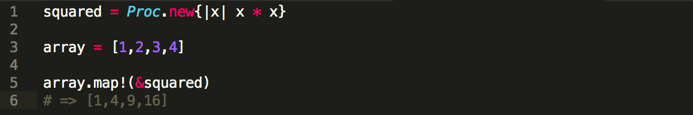
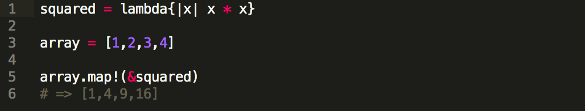
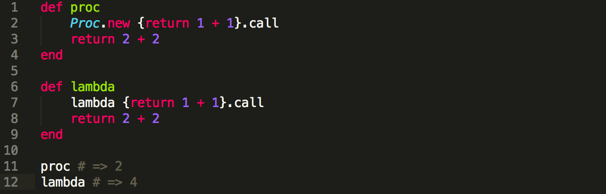

Blocks, Procs, and Lambdas
One of my favorite parts of the Ruby Programming language is being able to pass code to a method (usually an iterator) and have that code executed dynamically. In Ruby there are several ways to do this using: Blocks, Procs and Lamdbas. While these are all very similar, there are some very subtle differences.
Blocks
A block is code that is implicitly passed to a method through the use of either curly braces, {...}, or do...end syntax. It's common convention to use {...} for single line blocks, and do...end for multi-line blocks. For example, the following blocks are functionally the same:

Procs
The above example demonstrates a minor limitation of blocks: they are syntax and disposable. We have to retype blocks every time we reuse them on different arrays, but we can store a block for later use by using the Ruby Proc Object. We can store a Proc in a variable, and then explicitly pass it to any method that accepts a callable object. Rewriting the above example as a Proc would look like the following:
The & is used to convert the squared proc into a block. It should be used any time a proc is passed to a method that expects a block.
Lambdas
Lambdas are useful in the same situations in which you'd use a proc. It is defined using the following syntax:
However, there are two main differences between proc and lambda. First, a lambda checks the number of arguments passed to it, while proc does not. This means that a lambda will throw an error if you pass it the wrong number of arguments, whereas a proc will ignore unexpected arguments and assign nil to any that are missing. Second, when a lambda returns, it passes control back to the calling method; when a proc returns, it does so immediately, without going back to the calling method. As you can see proc_math hits the return statement inside the Proc and returns the value of 2. In contrast, lambda_math skips the return statement and evaluates 2 + 2 instead.
